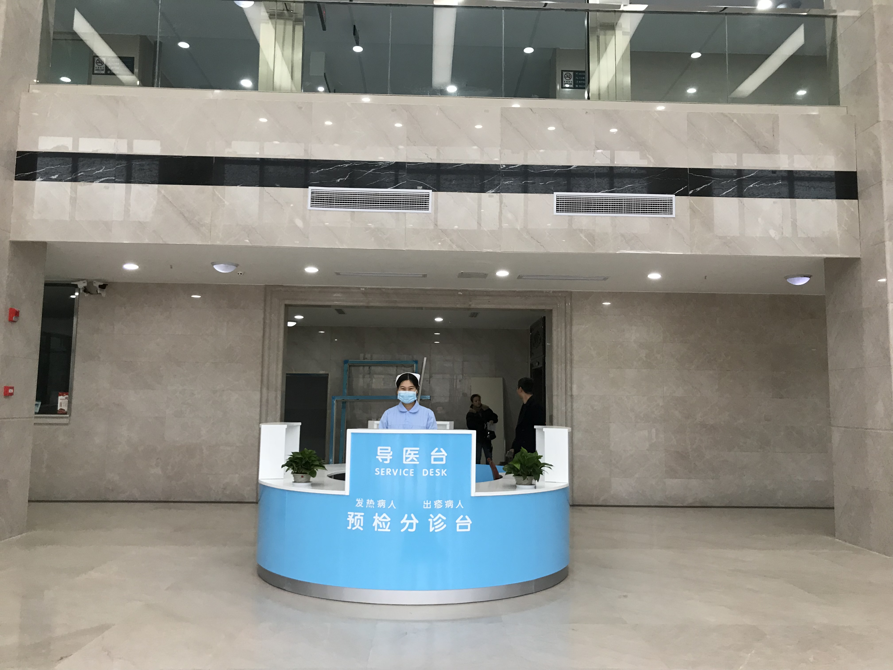
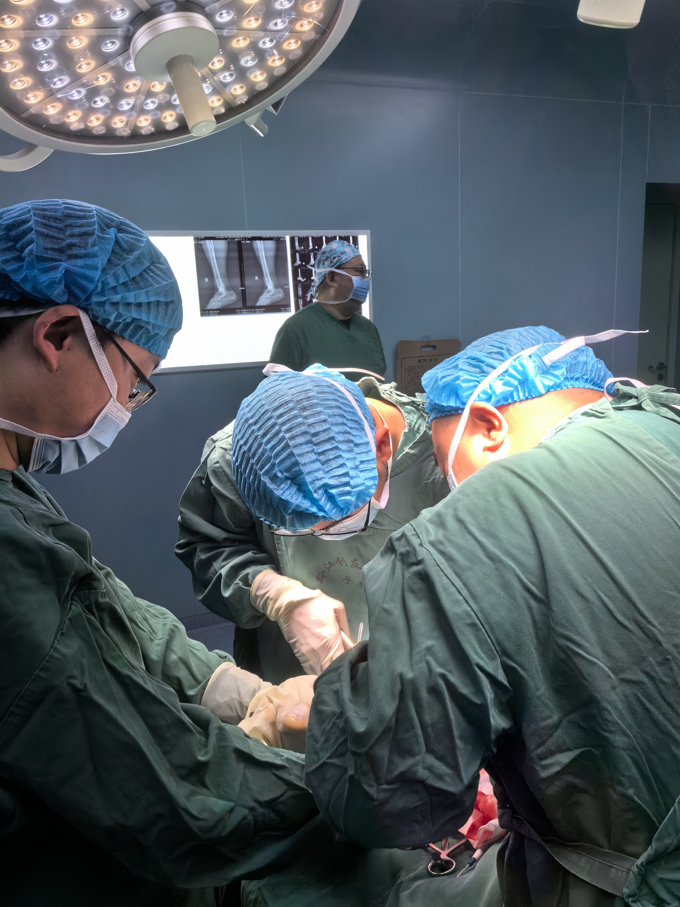
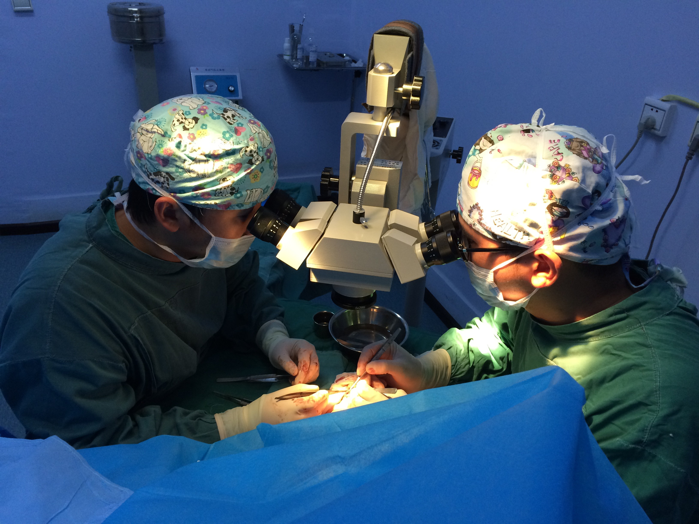
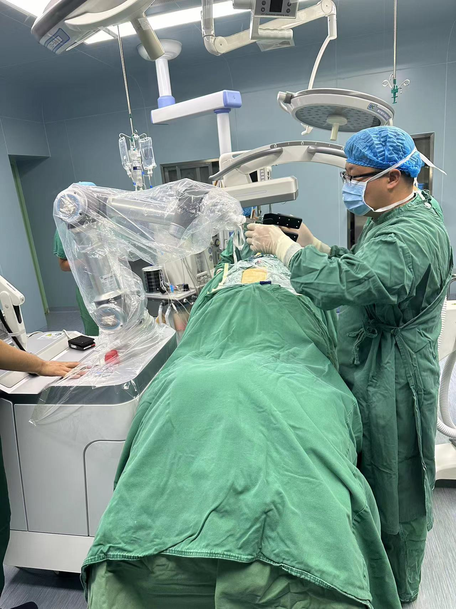
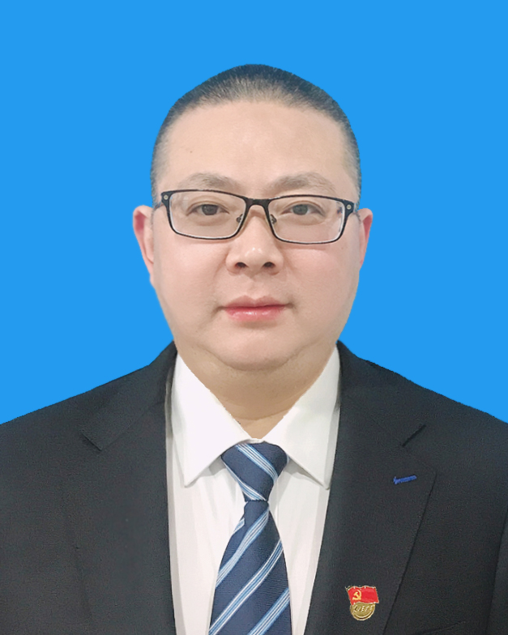

医院概况
黔江创友骨科医院成立于2011年6月，是经重庆市卫生健康委员会批准成立的二级骨科专科医院，也是渝东南地区规模最大、技术实力最强的骨科专科医院。
医院位于重庆市黔江区舟白街道武陵大道北段98号，交通便利，环境优雅。现有职工167人，其中少数民族职工114人，占比68.26%。
院训：责任 · 厚德 · 精业

2011
建院年份
101
开放床位
167
医务人员
99.8%
断肢再植存活率
资质定点
- 重庆市120急救网络医院
- 城乡居民医疗保险定点
- 城镇职工医疗保险定点
- 工伤保险定点
- 商业保险定点
- 国家残疾儿童康复救助定点
特色技术

👶 小儿矫形
专业的小儿骨科矫形团队，擅长各类先天性及后天性骨关节畸形的手术治疗，帮助众多患儿恢复正常运动功能。

🔬 断肢（指/趾）再植
运用显微外科技术进行断肢再植手术，成功率高达99.8%，最大程度保留患者肢体功能。

🦾 髋膝关节置换
成熟的关节置换技术，由经验丰富的专家主刀，术后恢复快，患者满意度高。

🤖 机器人辅助手术
引进先进手术机器人，开展机器人引导下脊柱修补术，精准定位，减少创伤，缩短恢复周期。

💆 慢性颈肩腰腿痛
采用中西医结合方法，综合治疗，为患者制定个性化康复方案，解决长期疼痛困扰。

💪 康复医学
现代化康复医学科，提供术后康复、运动损伤康复、慢性疼痛管理等全方位康复服务。
专家团队

余晓辉
首席骨科专家 · 院长 · 副主任医师
从事骨科临床工作三十余年，在骨科常见病、多发病及疑难病症的诊治方面积累了丰富经验。擅长髋膝关节置换、脊柱外科手术、小儿骨科矫形。
| 何鸿 | 中医科主任 · 副主任医师 | 中医骨伤、康复理疗 |
| 王耀 | 关节外科主任 · 主治医师 | 关节疾病诊治 |
| 任建国 | 院长助理 · 手足外科主任 | 手足外科、显微外科 |
| 兰晓东 | 院长助理 · 康复医学科主任 | 康复医学 |
| 任江林 | 关节外科副主任 | 关节外科 |
| 胡华 | 中医科副主任 | 中医骨伤 |
| 罗晓琴 | 康复医学科副主任 | 康复治疗 |
| 湛华阳 | 门诊部主任 | 门诊综合诊疗 |
| 向浩 | 内科主任 | 内科基础疾病管理 |

医院文化
办院宗旨：聚专业人才，做骨科典范、塑仁爱之心，解百姓疾患
办院方针：以病人为中心、以质量求生存、以创新促发展、以服务树形象、以专业铸品牌
发展战略：专注骨科及与骨科紧密相关学科建设，全面实现高质量可持续发展
使命：创骨科典范，友一方百姓
愿景：建成受尊重的区域性骨科医院领导品牌